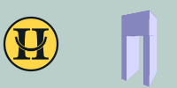

Kartta on tulossa ... kohta.
Sorvasen lintutorni on tässä.
Uuraisten sivut on tässä.
Demo styles:
- 1./ Yö, Maantie, Suo
- 2./ Metsä, Maantie, Suo
- 3./ Metsä, Nurmi, Suo
- 4./ Metsä, Suo, Nurmi
- 5./ Metsä, Suo, Maantie
- 6./ Test - eri näppäimiä - Metsä, Maantie, Suo,
- 7./ Test - Suo näppäimiä - Metsä, Maantie, Suo,
- 8./ Test - pari Nurmi näppäimiä - Metsä, Maantie, Suo,
Kuvassa kaksi linkkiä.
